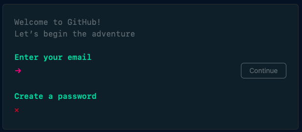
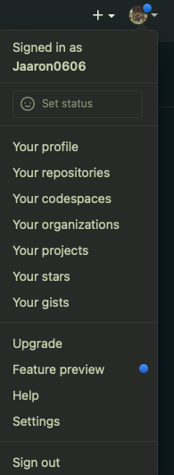
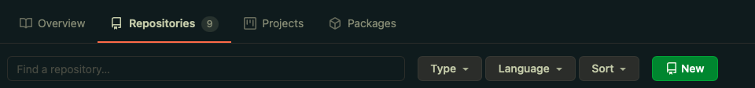
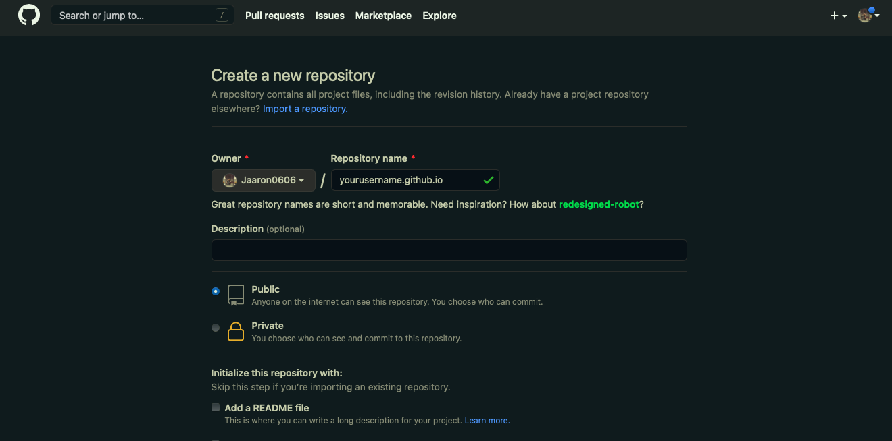
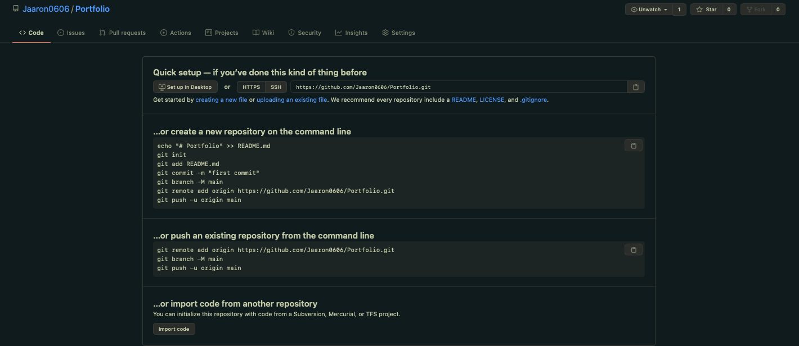
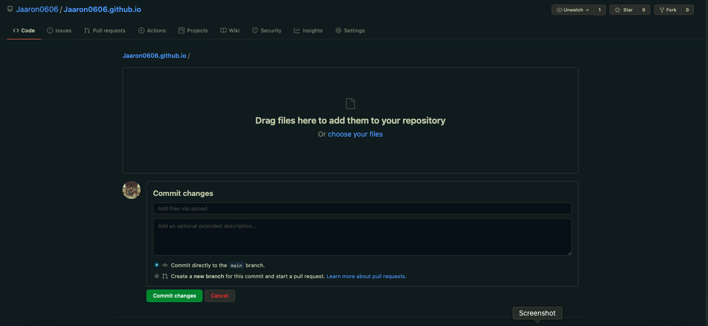
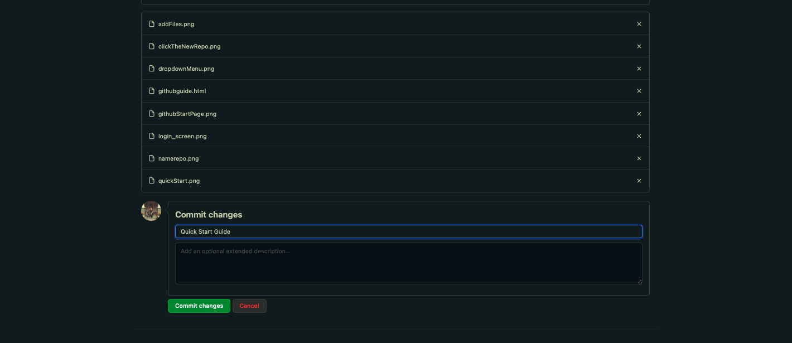

A quick guide to create a webpage using Github.
If you have never used Github before, you can need to create a account before you can create a webpage. Open a browser and open https://github.com
If you already have an account just click the sign in option, if not you can create an account all you need is a email address and you will need to create a password.
The next step is to create a new repository for our webpage. In the top right-hand side of the screen you will see an icon. cliking the icon will show a dropdown screen, scroll down and click "your repositories"
Once your repositories page has open click the new button.
Give the new repository a name using your username and add ".github.io" to the end of it.
Once you have created the repository you will see a quick setup guide, click on words "uploading an existing file"
From there Drag and Drop the files you want to upload.
Once all the files have been added, click commit
That's it! To view your webpage open a new tab and navigate to the yourusername.github.io that you used.